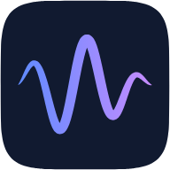
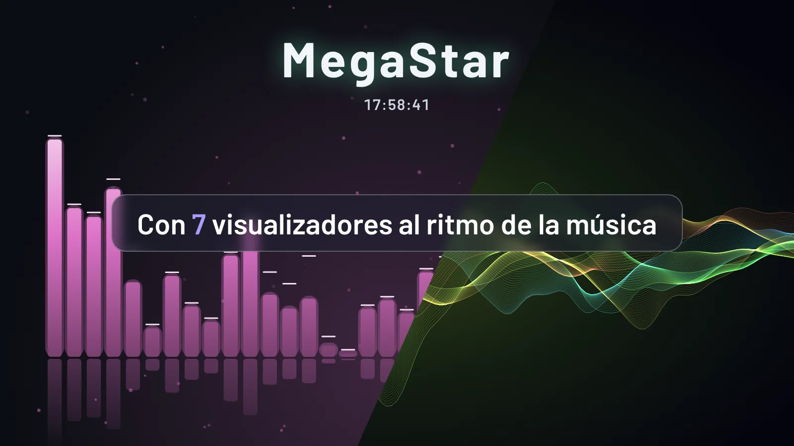

La radio siempre contigo
Un reproductor de radio ligero, rápido y sin rastreos. Pulsa una cadena desde las presintonías para escucharla. Con un clic derecho o una pulsación larga puedes ver sus emisoras. Se pueden reordenar presintonías arrastrándolas.
Escribe el nombre de una emisora en el buscador y elige una opción del catálogo. Puedes añadir tu elección a una cadena ya existente o crear una nueva. Si tienes el enlace de sonido, también puedes añadirlo.

El modo boletines conecta por defecto con las noticias de la SER de 8 a 20 horas. La aplicación también permite ecualizar y visualizar el sonido. Puedes exportar e importar tu lista de cadenas y emisoras a otros dispositivos.